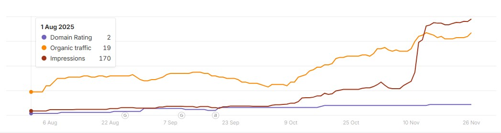
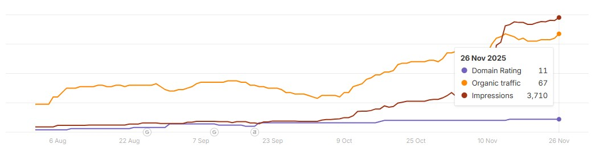

Builtfront was an early-stage B2B construction platform with limited search visibility and very little authority. I handled the content and on-page SEO work needed to publish stronger pages, improve technical consistency, and build measurable organic traction over a 3-month period.


The site needed stronger content, better on-page structure, and more consistent SEO execution. The goal was to improve visibility quickly without relying on paid promotion or a manual outreach campaign.
These were the clearest changes during the 90-day period:
My role focused on the content and on-page SEO work needed to make the site more useful, more consistent, and better structured for search.
For a young site in a competitive B2B niche, the result was clear evidence that stronger content execution and cleaner on-page support could produce meaningful organic growth without paid promotion or manual outreach.